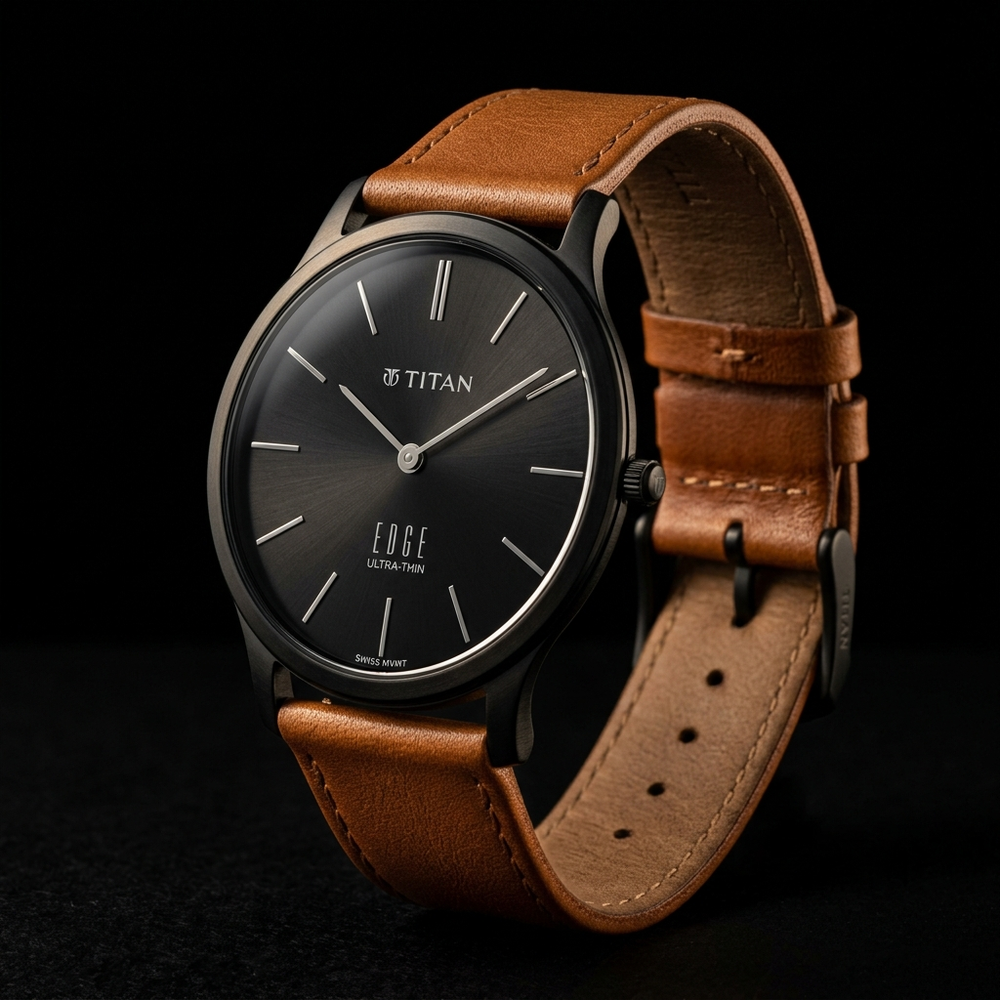

01
[ Ultra-Slim ]
Edge
The World's Slimmest Watch.
At just 3.5mm, the Edge defies physics. Crafted from Grade 5 titanium and ceramic — lighter than air, tougher than steel. A movement just 1.15mm thin. Wear it and forget it's there. Until someone asks.
3.5mmCase
Ti-5Grade
1.15mmMovement